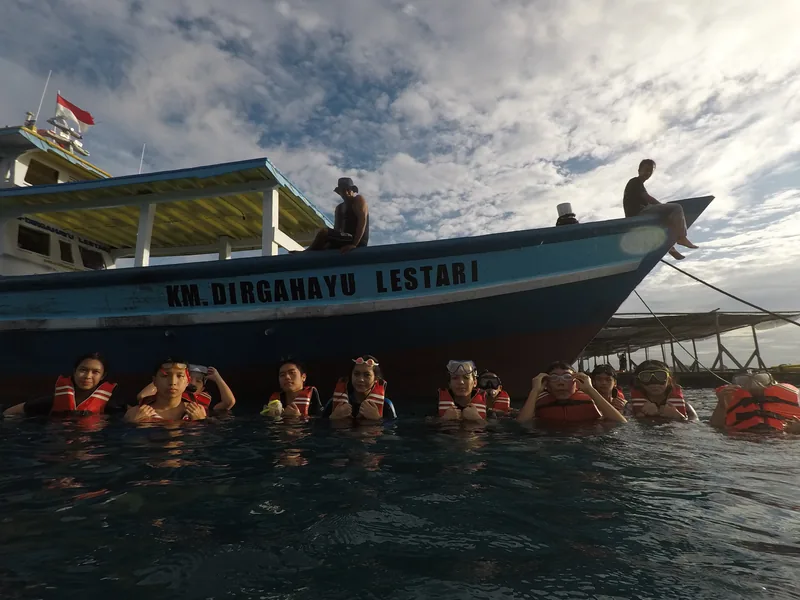
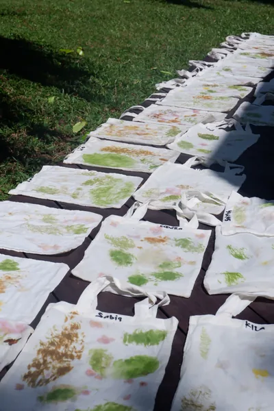
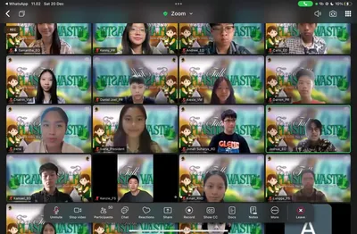
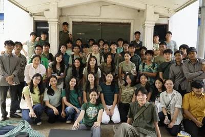
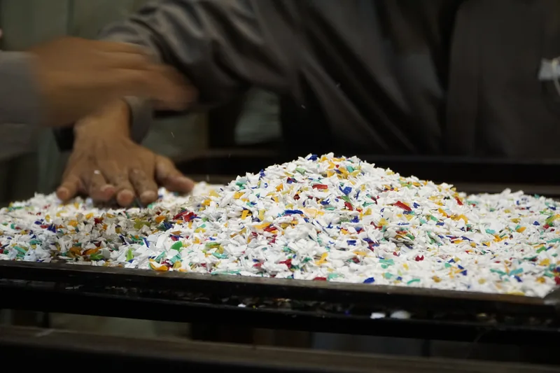

View Details

Program Kami
Program kerja Greenpact dirancang untuk mengubah kepedulian terhadap lingkungan menjadi aksi nyata. Melalui edukasi, penelitian, kolaborasi, dan pengabdian kepada masyarakat, setiap program memberikan kesempatan bagi generasi muda untuk menciptakan dampak yang berkelanjutan

View Details
Hari Lingkungan Sedunia - Anyer
View Details
Workshop AMSA X GP

View Details
Webinar GP X Mortier

View Details
Pengunjungan Pabrik Mortier
View Details
Pameran bukantentangsampah

Ikuti Kami
Jadilah bagian dari gerakan Greenpact. Bersama, kita dapat menciptakan perubahan nyata melalui aksi lingkungan, inovasi, dan kolaborasi demi masa depan yang lebih berkelanjutan.